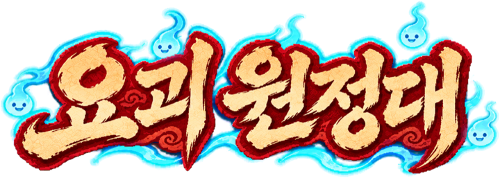
동짓날 밤, 할머니가 저승사자를 따라갔습니다.
마당에는 팥알만 흩어져 있고, 다락 궤짝에서는 열두 해 동안 잠들어 있던 도깨비가 굴러 나왔습니다. 열두 살 솔은 그 도깨비와 함께 할머니를 데리러 저승 문까지 가기로 합니다.
오토배틀 로그라이크요괴 42종결말 3가지광고·추가 결제 없음오프라인
그날 밤
할머니는 동지마다 같은 말을 했습니다. 오늘 밤엔 무슨 소리가 나도 대답하지 말고, 다락 근처엔 가지 말라고요. 올해는 자정에 하늘이 갈라졌고, 눈 위에 발자국 하나 없는 갓 쓴 사내가 마당에 서 있었습니다.
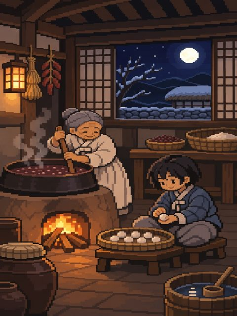
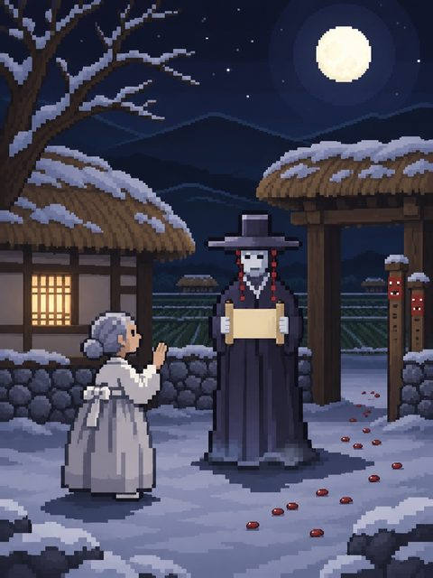
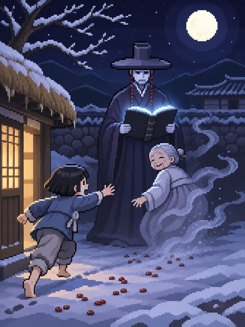
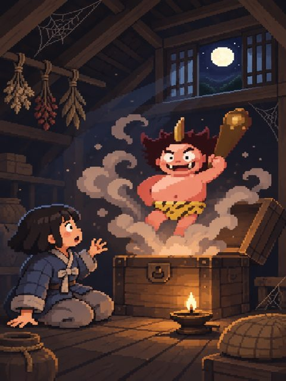
궤짝에서 나온 도깨비의 이름은 뚝이입니다. 할머니와 오십 년을 알고 지냈다는데, 할머니가 무엇을 빌렸는지 물으면 말을 돌립니다.
"그건… 막례한테 직접 들어. 데려오면 되잖아."도깨비 뚝이
하늘 문이 열린 틈에 저승 명부 다섯 장이 흩어졌습니다. 사람의 수명이 적힌 종이라, 그 장을 주운 큰 요괴들은 저마다 제 욕심을 채우는 데 쓰고 있습니다. 다섯 장을 모두 되찾아야 저승 문까지 갈 수 있습니다.
요괴는 요괴로 막는 거야
뚝이가 방망이를 두드리면 도깨비 장터가 열립니다. 밤마다 장터에 나온 요괴를 사서 원정대를 꾸리고, 앞줄 둘과 뒷줄 셋으로 세우면 싸움은 자동으로 흘러갑니다. 내가 할 일은 누구를 데려가고 어디에 세울지 정하는 것입니다.
같은 요괴를 셋 모으면 한 단계 오르고, 3단계가 되면 완성됩니다. 등급이 높은 요괴는 밤이 깊어야 장터에 나오기 때문에, 지금 있는 요괴를 키울지 새 요괴를 기다릴지 매번 고민하게 됩니다.
요괴는 저마다 나무, 불, 흙, 쇠, 물 가운데 한 기운을 타고났습니다. 물은 불을 끄고 불은 쇠를 녹이듯, 상극인 상대에게는 피해를 더 줍니다. 바로 앞자리 요괴가 나를 살리는 기운이면 싸움을 시작할 때 힘이 붙어서, 줄 세우는 순서 하나로 이기고 지는 일이 자주 생깁니다.
기력이 차면, 필살기
요괴는 모두 마흔두 종입니다. 도깨비와 구미호처럼 익숙한 얼굴도 있고, 손각시나 객귀처럼 옛이야기에만 남은 요괴도 있습니다. 요괴마다 특성 하나와 필살기 하나가 있고, 기력이 가득 차면 화면을 가로지르는 컷인과 함께 필살기가 터집니다.
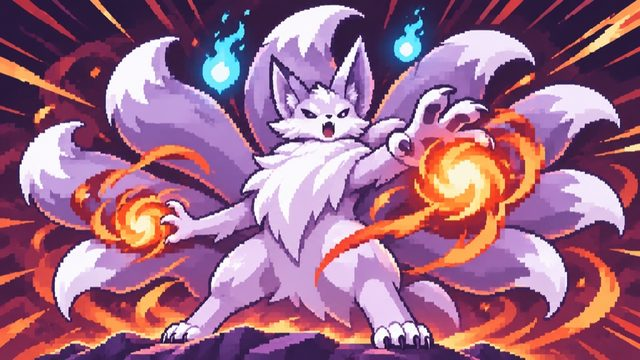
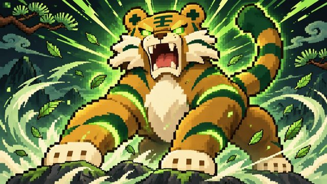
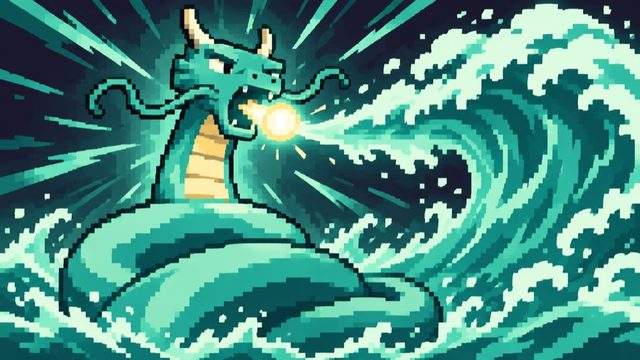
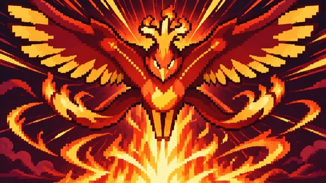
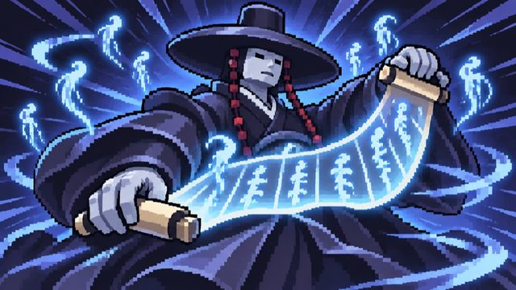
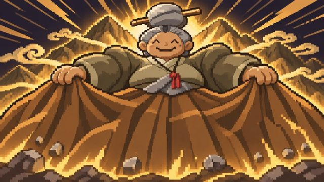
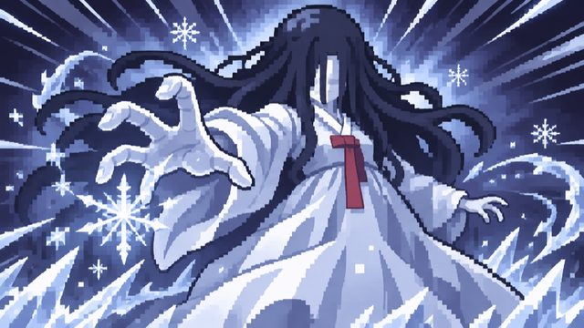
여섯 지역, 명부를 쥔 요괴들
장마다 목숨 다섯 개로 열 번을 이기면 명부를 쥔 우두머리가 나타납니다. 1장을 마치면 2장부터 5장까지는 원하는 순서로 갈 수 있습니다.
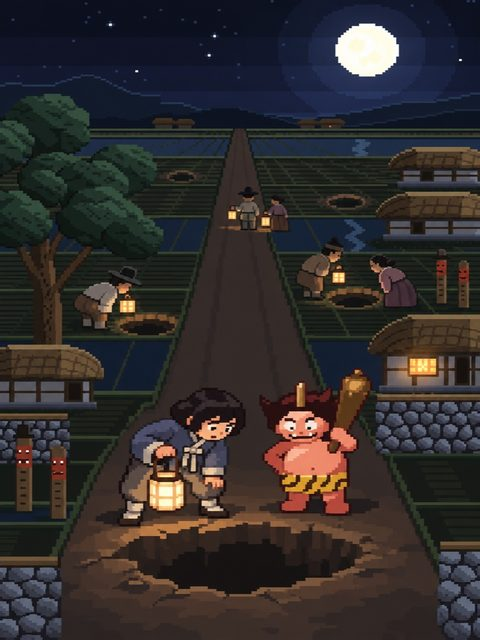
솔뫼골 들판
아침이 밝자 들판 곳곳에 사람 하나가 빠질 만한 구멍이 뚫려 있습니다. 땅 밑 나라의 도적 지하국 대적이 사람을 끌어내리고 있습니다.
"남의 목숨으로 자기가 더 산다고?"솔
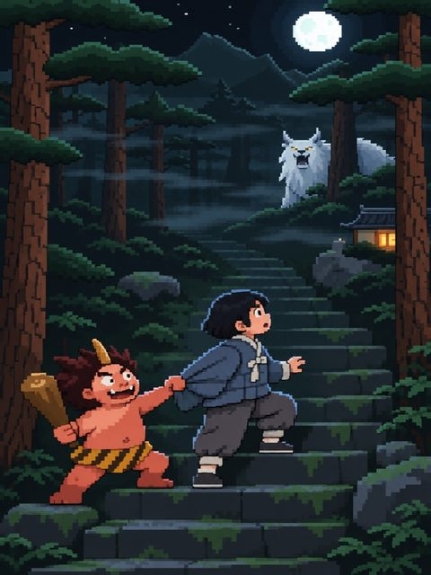
깊은 산 백운령
낮에도 어두운 숲에서 할머니 목소리가 솔을 부릅니다. 그리운 목소리를 흉내 내 사람을 숲 깊이 끌고 가는 장산범의 짓입니다.
"알아. 알지만… 진짜 같았어."솔
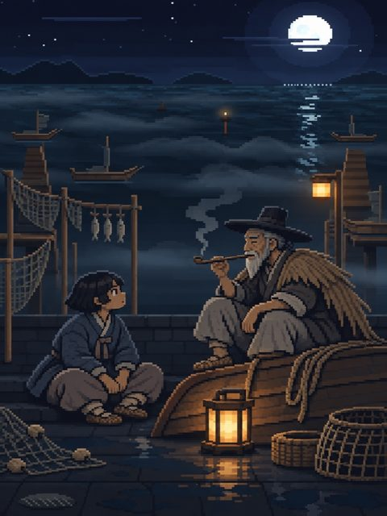
물안개 포구
몇 달째 안개가 걷히지 않는 포구에서, 늙은 어부가 솔의 얼굴을 한참 들여다봅니다. 뚝이는 어부를 한 번 노려보고 서둘러 장터를 엽니다.
"열두 해 전 그 난파 때 막례가 안고 나온 아기 아니냐?"늙은 어부
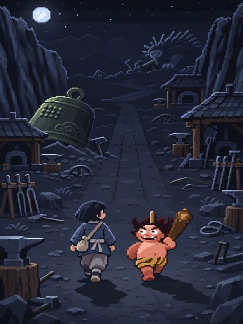
쇠울음 고개
대장간의 불이 모두 꺼졌습니다. 저승 문을 닫던 종이 이 고개에 떨어졌고, 쇠라면 뭐든 먹어 치우는 불가사리가 그 종을 핥고 있습니다.
"뚝이. 이제 나한테 숨기는 거 없지?"솔
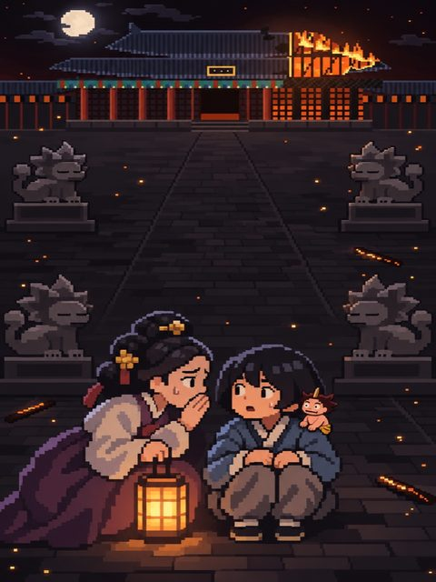
불탄 궁궐 화궁
왕비의 그림자에 꼬리가 아홉 개 보인다는 소문이 돕니다. 사람이 되고 싶은 구미호 천호가 마지막 두 장을 쥐고 있습니다.
"누구 목숨인데?" "마지막 장은 열어 봐야 알아."솔과 뚝이
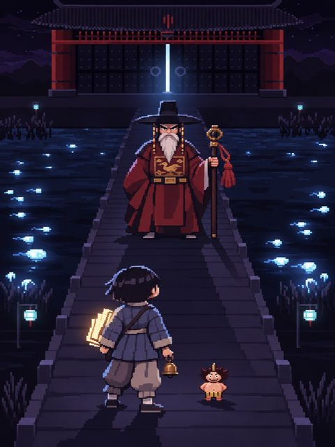
저승 문
넋들이 강처럼 흐르는 다리 끝에 이 문을 가장 오래 지킨 차사 강림이 서 있습니다. 강림은 솔에게 여기까지 오며 무엇을 보았는지 묻습니다.
그 대답과 길에서 내린 선택에 따라, 할머니가 빌린 것의 값을 치르는 결말이 세 갈래로 나뉩니다.
찾을수록 열리는 것들
장마다 숨은 이야기가 두 편씩, 모두 열두 편 숨어 있습니다. 어떤 이야기는 특정 요괴와 함께 장을 깨야 열리고, 어떤 이야기는 일부러 져야 열립니다. 이야기 도감에는 아직 못 본 칸에 귀띔이 적혀 있습니다.
숨은 요괴 여섯은 장터에 그냥 나오지 않습니다. 업두꺼비와 업구렁이를 함께 데리고 세 밤 연달아 이기면, 집 지킴이들을 따라 터주대감이 찾아오는 식입니다. 부르는 방법은 이야기 도감을 채운 사람에게만 알려 줍니다. 한 번 찾아온 요괴는 그 뒤로 장터에 계속 나옵니다.
원정이 끝나면 모은 혼불로 서낭당에서 원정대를 강화하고, 아끼는 요괴 하나를 동료로 삼아 다음 원정에 데려갈 수 있습니다. 첫 결말을 본 뒤에는 명부 단계가 열립니다. 단계를 올릴수록 적이 강해지는 대신 혼불을 더 받습니다.
- 요괴 42종이 전투용 픽셀 스프라이트로 움직이고, 필살기 컷인 42장과 이야기 장면 60여 장이 따로 그려져 있습니다.
- 계정 없이 오프라인으로 플레이합니다. 이름이나 연락처 같은 개인정보는 수집하지 않습니다.
- 한 번 사면 끝까지 플레이할 수 있습니다. 광고와 추가 결제가 없습니다.
- 한국어로 플레이합니다.